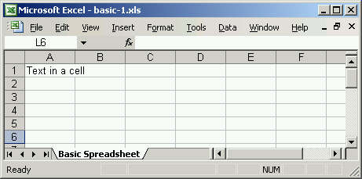
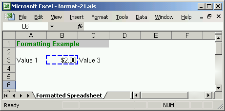
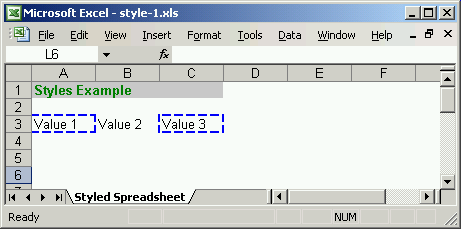
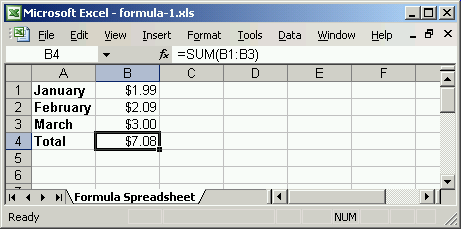
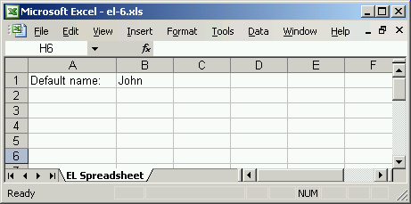
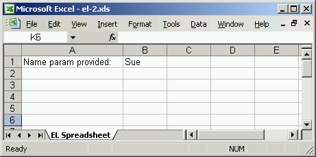

SsTemplates produces Excel documents using XML templates. The model is very similar to producing HTML using JSP pages. You can use SsTemplates as a standalone component for producing Excel documents in your Java application or as a servlet for rending Excel documents from your web application.
SsTemplates is supported by Carbon Five.
Building business applications at Carbon Five, we have found Excel to be an invaluable tool for putting data in the hands of business users. Business users use Excel daily to aggregate and organize information, slice and dice data, and produce charts and reports for printing and digital distribution. HTML-based reporting systems rarely meet the needs of business users as well as Excel-based reports.
Through building solutions to meet the needs of business users, we developed SsTemplates to give web developers a simple tool to produce meticulously formatted, data-rich Excel documents. SsTemplates is designed to provide a development model very similar to producing HTML pages using JSP and JSTL (the Java Standard Tag Library).
Here are a few simple examples to illustrate. These examples are included with the SsTemplates distribution. Exhaustive examples are included in the SsTemplates test suite for all SsTemplates features.
SsTemplates provides a basic XML syntax for describing Excel workbooks, sheets, rows and cell.
basic.sst
<workbook>
<sheet name="Basic Spreadsheet">
<row>
<cell>Text in a cell</cell>
</row>
</sheet>
</workbook>

The full formatting options in Excel are available using the <style> tag. There are many options for styles that can be set and their possible values. You can use either standard color named or hex codes for color values.
TODO: document all style attributes and values. For now, see com.carbonfive.sstemplates.tag.StyleTag source.
format.sst
<workbook bgcolor="#FFFFFF">
<sheet name="Formatted Spreadsheet">
<row>
<style fontColor="green" fontWeight="bold"
foreground="#C9C9C9" fillPattern="solid-foreground">
<cell colspan="3">Formatting Example</cell>
</style>
</row>
<row/>
<row>
<cell>Value 1</cell>
<style border="medium-dashed" borderColor="blue" dataFormat="$0.00">
<cell type="numeric">2</cell>
</style>
<cell>Value 3</cell>
</row>
</sheet>
</workbook>

Named styles work like CSS classes. They let you define styles in one place and then use them by name later.
style.sst
<workbook bgcolor="#FFFFFF">
<style name="header" fontColor="green" fontWeight="bold"
foreground="#C9C9C9" fillPattern="solid-foreground"/>
<style name="highlight" border="medium-dashed" borderColor="blue"/>
<sheet name="Styled Spreadsheet">
<row>
<cell style="header" colspan="3">Styles Example</cell>
</row>
<row/>
<row>
<cell style="highlight">Value 1</cell>
<cell>Value 2</cell>
<cell style="highlight">Value 3</cell>
</row>
</sheet>
</workbook>

SsTemplates supports all Excel formulas.
formula.sst
<workbook>
<style name="label" fontWeight="bold"/>
<style name="money" dataFormat="$0.00"/>
<sheet name="Formula Spreadsheet">
<row>
<cell style="label">January</cell>
<cell style="money" type="numeric">1.99</cell>
</row>
<row>
<cell style="label">February</cell>
<cell style="money" type="numeric">2.09</cell>
</row>
<row>
<cell style="label">March</cell>
<cell style="money" type="numeric">3</cell>
</row>
<row>
<cell style="label">Total</cell>
<cell style="money" type="formula">sum(B1:B3)</cell>
</row>
</sheet>
</workbook>

SsTemplates includes expression language support and flow control tags designed to match the functionality of JSP 2.0 JSTL. This includes tags <set>, <if>, and <forEach>.
When using SsTemplates in a servlet container, an SST file has access to the same implicit EL variables as a JSP. Request-scoped attributes are available as EL variable names and request parameters are available through the implicit 'param' variable. This is the key to the power of SsTemplates - you provide Java objects to a template to render using standard EL and flow control tags.
el.sst
<workbook xmlns="http://carbonfive.com/schema/sstemplates">
<set var="exists" value="${!empty param.name}"/>
<sheet name="EL Spreadsheet">
<row>
<if test="${!exists}">
<cell>Default name:</cell>
<cell>John</cell>
</if>
<if test="${exists}">
<cell>Provided names:</cell>
<forEach var="name" items="${paramValues.name}">
<cell>${name}</cell>
</forEach>
</if>
</row>
</sheet>
</workbook>

el.sst?name=Sue&name=Bob

In addition to the basic features illustrated above, SsTemplates includes support for:
The best way to learn the specifics of these features (for now) is to run through the .sst files in the project test suite.
There are two primary usage models for SsTemplates - servlet and standalone.
Using SsTemplates in a servlet container is very similar to using JSPs. You map *.sst files to the SsTemplateServlet in your web application's web.xml file. You can then access *.sst files directly through a web browser and the SsTemplateServlet will handle rendering Excel documents to the browser. If you provide request parameters to the SST file in a query string or by submitting a form, those parameters will be available to the SST file as illustrated in the EL Example above.
As with JSP files, you can forward to an SST file from a servlet. This allows you to use the standard Model 2 architecture of controller code (servlet) fetching and manipulating objects and then forwarding them to a view for rendering. Simply set objects as request attributes to make them available to the SST file as EL variables.
package com.carbonfive.sstemplates.examples;
import java.io.*;
import javax.servlet.*;
import javax.servlet.http.*;
public class SimpleServlet extends HttpServlet
{
public void service(HttpServletRequest request, HttpServletResponse response)
throws IOException, ServletException
{
request.setAttribute("stringValue", "Ralph");
request.setAttribute("listValue", new String[] { "Sue", "Amy", "Donna" });
request.getRequestDispatcher("/WEB-INF/templates/names.sst").forward(request, response);
}
}
If you are using SsTemplates outside of a servlet container or simply want greater control over the lifecycle of template rendering, you can use the SsTemplates API. Your entry point is {@link com.carbonfive.sstemplates.SsTemplateProcessor}. You provide a template and a context that holds Java objects to the processor and get back an HSSFWorkbook object which you can then write to any output stream.
package com.carbonfive.sstemplates.examples;
import java.util.*;
import java.io.*;
import org.apache.poi.hssf.usermodel.*;
import com.carbonfive.sstemplates.*;
public class StandAlone
{
public static void main(String args[]) throws Exception
{
File template = new File("examples/templates/standalone.sst");
Map context = new HashMap();
context.put("stringValue", "Ralph");
context.put("listValue", new String[] { "Sue", "Amy", "Donna" });
SsTemplateProcessor processor = SsTemplateProcessor.getInstance();
HSSFWorkbook workbook = processor.process(template, context);
File xls = new File("standalone.xls");
OutputStream out = new FileOutputStream(xls);
try
{
workbook.write(out);
}
finally
{
out.close();
}
}
}
Authoring SST files is really a matter of learning the tag syntax for SsTemplates. We have made efforts to keep the tag syntax consistent with JSP 2.0 JSTL tags and to borrow from HTML and CSS where possible.
To assist in authoring SST files, we maintain an XML schema document that describes the valid syntax for SST files. Many IDE's provide schema validation. You must remember to include the schema reference in the root <workbook> element to get schema validation. Additionally you will need to register the schema file, sstemplates.xsd, provided in the distribution with your IDE for the URI "http://carbonfive.com/schema/sstemplates". SsTemplates does NOT do schema validation at runtime.
<workbook xmlns="http://carbonfive.com/schema/sstemplates">
<sheet name="Schema Example">
<row>
<cell>Am I valid?</cell>
</row>
</sheet>
</workbook>
SsTemplates uses several open source libraries from the Apache Jakarta project. These libraries are included with the distribution. You may need to reconcile these library versions with versions of the same libraries that you use in your own project.
<servlet> <servlet-name>SsTemplateServlet</servlet-name> <servlet-class>com.carbonfive.sstemplates.servlet.SsTemplateServlet</servlet-class> <load-on-startup>1</load-on-startup> </servlet> <servlet-mapping> <servlet-name>SsTemplateServlet</servlet-name> <url-pattern>*.sst</url-pattern> </servlet-mapping>
SsTemplates is in use in production applications by many Carbon Five clients. Known issues include:
<choose> tag to match JSTL functionality
SsTemplates is really a wrapper around the HSSF libraries included in the Jakarta POI project. To understand the internals of SsTemplates, you'll need to get familiar with HSSF.
The architecture for SsTemplates is fairly simple:
For those interesting in peeking under the hood or making changes, you can check out the latest changes from CVS from the module named 'sstemplates'. The project includes an Ant build script and JUnit unit tests that can be used to make changes. The unit test suite provides excellent code coverage and is the best way to understand the internals of SsTemplates.
SsTemplates is distributed with the permissive BSD License.